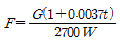
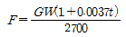
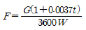
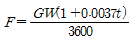
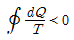
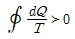
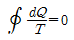
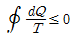
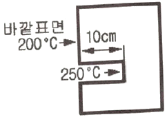
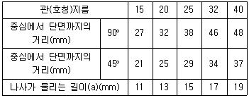

에너지관리산업기사 (2020-08-22 기출문제)
1과목: 열역학 및 연소관리
1. 공기 중 폭발범위가 약 2.2~9.5v%인 기체연료는?
- 수소
- 프로판
- 일산화탄소
- 아세틸렌
(정답률: 81%)

2. 압축성 인자(compressibility factor)에 대한 설명으로 옳은 것은?
- 실제기체가 이상기체에 대한 거동에서 벗어나는 정도를 나타낸다.
- 실제기체는 1의 값을 갖는다.
- 항상 1보다 작은 값을 갖는다.
- 기체 압력이 0으로 접근할 때 0으로 접근된다.
(정답률: 63%)
3. 수소 1kg을 완전연소시키는데 필요한 이론산소량은 약 몇 Nm3인가?
- 1.86
- 2
- 5.6
- 26.7
(정답률: 60%)
4. 기체연료의 장점에 해당하지 않는 것은?
- 저장이나 운송이 쉽고 용이하다.
- 비열이 작아서 예열이 용이하고 열효율, 화염온도 조절이 비교적 용이하다.
- 연료의 공급량 조절이 쉽고 공기와의 혼합을 임의로 조절할 수 있다.
- 연소 후 유해잔류 성분이 거의 없다.
(정답률: 83%)
5. 15℃의 물로 –15℃의 얼음을 매시간당 100kg씩 제조하고자 할 때, 냉동기의 능력은 약 몇 kW인가? (단 0℃ 얼음의 응고잠열은 335kJ/kg이고, 물의 비열은 4.2kJ/kg·℃, 얼음의 비열은 2kJ/kg·℃이다.)
- 2
- 4
- 12
- 30
(정답률: 58%)
6. 다음 온도에 대한 설명으로 잘못 된 것은?
- 온수의 온도가 110°F로 표시되어 있다면 섭씨온도로는 43.3℃이다.
- 30℃를 화씨오노도로 고치면 86°F이다.
- 섭씨 30℃에 해당하는 절대온도는 303K이다.
- 40°F는 절대 온도로 464.4K이다.
(정답률: 74%)
7. 보일러 통풍에 대한 설명으로 틀린 것은?
- 자연 통풍은 굴뚝내의 연소가스와 대기와의 밀도차에 의해 이루어진다.
- 통풍력은 굴뚝 외부의 압력과 굴뚝하부(유입구)의 압력과의 차이이다.
- 압입통풍을 하는 경우 연소실내는 부압이 작용한다.
- 강제통풍 방식 중 평형통풍 방식은 통풍력을 조절할 수 있다.
(정답률: 62%)
8. 과잉공기량이 많을 경우 발생되는 현상을 설명한 것으로 틀린 것은?
- 배기가스 중 CO2농도가 낮게 된다.
- 연소실 온도가 낮게 된다.
- 배기가스에 의한 열손실이 증가한다.
- 불완전연소를 일으키기 쉽다.
(정답률: 55%)
9. 물질의 상변화 과정동안 흡수되거나 방출되는 에너지의 양을 무엇이라 하는가?
- 잠열
- 비열
- 현열
- 반응열
(정답률: 78%)
10. 온도 300K인 공기를 가열하여 600K가 되었다. 초기 상태 공기의 비체적을 1m3/kg, 최종 상태 공기의 비체적을 2m3/kg이라고 할 때, 이 과정 동안 엔트로피의 변화량은 약 몇 kJ/kg·K인가? (단, 공기의 정적비율은 0.7kJ/kg·K, 기체상수는 0.3kJ/K이다.)
- 0.3
- 0.5
- 0.7
- 1.0
(정답률: 45%)
11. 연돌의 상부 단면적을 구하는 식으로 옳은 것은? (단, F:연돌의 상부 단면적(m2), t: 배기가스 온도(℃), W: 배기가스 속도(m/s), G: 배기가스 양(Nm3/h)이다.)




(정답률: 65%)
12. 임의의 사이클에서 클라우지우스의 적분을 나타내는 식은?




(정답률: 73%)
13. 압력 0.1MPa, 온도 20℃의 공기가 6m×10m×4m인 실내에 존재할 때 공기의 질량은 약 몇 kg인가? (단, 공기의 기체상수 R은 0.287kJ/kg·K이다.)
- 270.7
- 285.4
- 299.1
- 303.6
(정답률: 59%)
14. 원심식 통풍기에서 주로 사용하는 풍량 및 풍속 조절 방식이 아닌 것은?
- 회전수를 변화시켜 조절한다.
- 댐퍼의 개폐에 의해 조절한다.
- 흡입 베인의 개도에 의해 조절한다.
- 날개를 동익가변시켜 조절한다.
(정답률: 74%)
15. 증기의 건도에 관한 설명으로 틀린 것은?
- 포화수의 건도는 0이다.
- 습증기의 건도는 0보다 크고 1보다 작다.
- 건포화증기의 건도는 1이다.
- 과열증기의 건도는 0보다 작다.
(정답률: 67%)
16. 중유에 대한 설명으로 틀린 것은?
- 점도에 따라 A급, B급, C급으로 나눈다.
- 비중은 약 0.79~0.85이다.
- 보일러용 연료로 많이 사용된다.
- 인화점은 약 60~150℃정도이다.
(정답률: 72%)
17. 포화액의 온도를 그대로 두고 압력을 높이면 어떤 상태가 되는가?
- 압축액
- 포화액
- 습포화 증기
- 건포화 증기
(정답률: 70%)
18. 액체연료 사용 시 고려해야 할 대상이 아닌 것은?
- 잔류탄소분
- 인화점
- 점결성
- 황분
(정답률: 55%)
19. 다음 중 CH4 및 H2를 주성분으로 한 기체연료는?
- 고로가스
- 발생로가스
- 수성가스
- 석탄가스
(정답률: 69%)
20. 랭킨사이클에서 열효율을 상승시키기 위한 방법으로 옳은 것은?
- 보일러의 온도를 높이고, 응축기의 압력을 높게 한다.
- 보일러의 온도를 높이고, 응축기의 압력을 낮게 한다.
- 보일러의 온도를 낮추고, 응축기의 압력을 높게 한다.
- 보일러의 온도를 낮추고, 응축기의 압력을 낮게 한다.
(정답률: 69%)
2과목: 계측 및 에너지진단
21. 적외선 가스분석계의 특징에 대한 설명으로 옳은 것은?
- 선택성이 뛰어나다.
- 대상 범위가 좁다.
- 저농도의 분석에 부적합하다.
- 측정가스의 더스트 방지나 탈습에 충분한 주의가 필요 없다.
(정답률: 71%)
22. 다음 중 전기식 제어방식의 특징으로 틀린 것은?
- 고온 다습한 주위환경에 사용하기 용이하다.
- 전송거리가 길고 전송지연이 생기지 않는다.
- 신호처리나 컴퓨터 등과의 접속이 용이하다.
- 배선이 용이하고 복잡한 신호에 적합하다.
(정답률: 77%)
23. 매시간 1600kg의 연료를 연소시켜 16000kg/h의 증기를 발생시키는 보일러의 효율(%)은 약 얼마인가? (단, 연료의 발열량 39800kJ/kg, 발생증기의 엔탈피 3023kJ/kg, 급수증기의 엔탈피 92kJ/kg,이다.)
- 84.4
- 73.6
- 65.2
- 88.9
(정답률: 55%)
24. 보일러의 노내압을 제어하기 위한 조작으로 적절하지 않은 것은?
- 연소가스 배출량의 조작
- 공기량의 조작
- 댐퍼의 조작
- 급수량 조작
(정답률: 71%)
25. 증기보일러의 용량표시 방법 중 일반적으로 가장 많이 사용되는 정격용량은 무엇을 의미하는가?
- 상당증발량
- 최고사용압력
- 상당방열면적
- 시간당 발열량
(정답률: 73%)
26. 보일러 열정산에서 출열 항목에 속하는 것은?
- 연료의 현열
- 연소용 공기의 현열
- 미연분에 의한 손실열
- 노내 분입 증기의 보유열량
(정답률: 69%)
27. 오차에 대한 설명으로 틀린 것은?
- 계통오차는 발생 원인을 알고 보정에 의해 측정값을 바르게 할 수 있다.
- 계측상태의 미소변화에 의한 것은 우연오차이다.
- 표준편차는 측정값에서 평균값을 더한 값의 제곱의 산술평균의 제곱근이다.
- 우연오차는 정확한 원인을 찾을 수 없어 완전한 제저가 불가능 하다.
(정답률: 66%)
28. 도너츠형의 측정실이 있고, 온도변화가 적고 부식성 가스나 습기가 적은 곳에 주로 사용되며 접압기체 및 배기가스의 압력측정에 적합한 압력계는?
- 침종식 압력계
- 환상천평식 압력계
- 분동식 압력계
- 부르동관식 압력계
(정답률: 69%)
29. 공기식으로 전송하는 계장용 압력계의 공기압 신호압력(kPa) 범위는?
- 20~100
- 300~500
- 500~1000
- 800~2000
(정답률: 67%)
30. 보일러 열정산 시 보일러 최종 출구에서 측정하는 값은?
- 급수온도
- 예열공기온도
- 배기가스온도
- 과열증기온도
(정답률: 76%)
31. 2000kPa의 압력을 mmHg로 나타내면 약 얼마인가?
- 10000
- 15000
- 17000
- 20000
(정답률: 61%)
32. 다음 온도계 중 가장 높은 온도를 측정할 수 있는 것은?
- 바이메탈 온도계
- 수은 온도계
- 백금저항 온도계
- PR열전대 온도계
(정답률: 72%)
33. 차압식 유량계로서 교축기구 전·후에 탭을 설치하는 것은?
- 오리피스
- 로터미터
- 피토관
- 가스미터
(정답률: 66%)
34. SI 유도단위 상태량이 아닌 것은?
- 넓이
- 부피
- 전류
- 전압
(정답률: 62%)
35. 원거리 지시 및 기록이 가능하여 1대의 계기로 여러 개소의 온도를 측정할 수 있으며, 제백(Seebeck) 효과를 이용한 온도계는?
- 유리 온도계
- 압력 온도계
- 열전대 온도계
- 방사 온도계
(정답률: 68%)
36. 서미스터(thermistor)에 관한 설명으로 틀린 것은?
- 온도변화에 따라 저항치가 크게 변하는 반도체로Ni, Co, Mn, Fe 및 Cu 등 금속산화물을 혼합하여 만든 것이다.
- 서미스터는 넓은 온도 범위 내에서 온도계수가 일정하다.
- 25℃에서 서미스터 온도계수는 약 –2~6%/℃의 매우 큰 값으로서 백금선의 약 10배이다.
- 측정온도 범위는 –100~300℃정도이며, 측온부를 작게 제작할 수 있어 시간 지연이 매우 적다.
(정답률: 59%)
37. 고압유체에서 레이놀즈수가 클 때 유량측정에 적합한 교축기구는?
- 플로우 노즐
- 오리피스
- 피토관
- 벤츄리관
(정답률: 55%)
38. 보일러에 있어서 자동제어가 아닌 것은?
- 급수제어
- 위치제어
- 연소제어
- 온도제어
(정답률: 75%)
39. 액체와 계기가 직접 접촉하지 않고 측정하는 액면계로서 산, 알카리, 부식성 유체의 액면 측정에 사용되는 액면계는?
- 직관식 액면계
- 초음파 액면계
- 압력식 액면계
- 플로트식 액면계
(정답률: 72%)
40. 화학적 가스분석계의 측정법에 속하는 것은?
- 도전율법
- 세락믹법
- 자화율법
- 연소열법
(정답률: 66%)
3과목: 열설비구조 및 시공
41. 스폴링(spalling)이란 내화물에 대한 어떤 현상을 의미하는가?
- 용융현상
- 연화현상
- 박락현상
- 분화현상
(정답률: 68%)
42. 강판의 두께가 12mm이고 리벳의 직경이 20mm이며, 피치가 48mm의 1줄 겹치기 리벳 조인트가 있다. 이 강판의 효율은?
- 25.9%
- 41.7%
- 58.3%
- 75.8%
(정답률: 51%)
43. 주철관의 공구 중 소켓 접합시 용해된 납물의 비산을 방지하는 것은?
- 클립
- 파이어 포트
- 링크형 파이프 커터
- 코킹정
(정답률: 65%)
44. 다음 중 전기로에 속하지 않는 것은?
- 전로
- 전기 저항로
- 아크로
- 유도로
(정답률: 64%)
45. 보일러 설치검사기준상 전열면적이 7m2인 경우 급수밸브 크기의 기준은 얼마이어야 하는가?
- 10A 이상
- 15A 이상
- 20A 이상
- 25A 이상
(정답률: 65%)
46. 고로에 대한 설명으로 틀린 것은?
- 제철공장에서 선철을 제조하는데 사용된다.
- 광석을 제련상 유리한 상태로 변화시키는데 목적이 있다.
- 용광로의 하부에 배치된 송풍구로부터 고온의 열풍을 취입한다.
- 용광로의 상부에 철광석과 환원제 그리고 원료로서 코크스를 투입한다.
(정답률: 56%)
47. 인젝터의 특징에 관한 설명으로 틀린 것은?
- 구조가 간단하고 소형이다.
- 별도의 소요 동력이 필요하다.
- 설치장소를 적게 차지한다.
- 시동과 정지가 용이하다.
(정답률: 73%)
48. 증기보일러에는 원칙적으로 2개 이상의 안전밸브를 설치하여야 하지만, 1개를 설치할 수 있는 최대 전열면적 기준은?
- 10m2 이하
- 30m2 이하
- 50m2 이하
- 100m2 이하
(정답률: 71%)
49. 그림과 같이 노벽에 깊이 10cm의 구멍을 뚫고 온도를 재었더니 250℃이었다. 바깥표면의 온도는 200℃이고, 노벽재료의 열전도율이 0.814W/m·℃일 때 바깥 표면 1m2에서 전열량은 약 몇 W인가?

- 59
- 147
- 171
- 407
(정답률: 51%)
50. 다음 중 연관식 보일러에 해당되는 것은?
- 벤슨 보일러
- 케와니 보일러
- 라몬트 보일러
- 코르니시 보일러
(정답률: 53%)
51. 캐스터블 내화물에 대한 설명으로 틀린 것은?
- 현장에서 필요한 형상으로 성형이 가능하다.
- 접촉부 없이 로체를 수축할 수 있다.
- 잔존 수축이 크고 열팽창도 작다.
- 내스폴링성이 작고 열전도율이 크다.
(정답률: 58%)
52. 중심선의 길이가 600mm이 되도록 25A의 관에서 90°와 45°의 엘보를 이음할 때 파이프의 실제 절단 길이(mm)는?

- 563
- 575
- 600
- 650
(정답률: 57%)
53. 에너지이용 합리화법령에 따라 검사의 종류 중 개조검사 적용 대상이 아닌 것은?
- 보일러의 설치장소를 변경하는 경우
- 연료 또는 연소방법을 변경하는 경우
- 증기보일러를 온수보일러로 개조하는 경우
- 보일러 섹션의 증감에 의하여 용량을 변경하는 경우
(정답률: 66%)
54. 크롬마그네시아계 내화물에 대한 설명으로 옳은 것은?
- 용융 온도가 낮다.
- 비중과 열팽창성이 작다.
- 내화도 및 하중연화점이 낮다.
- 염기성 슬래그에 대한 저항이 크다.
(정답률: 63%)
55. 주로 보일러 전열면이나 절탄기에 고정 설치해 두며, 분사관은 다수의 작은 구멍이 뚫려 있고 이곳에서 분사되는 증기로 매연을 제거하는 것으로서 분사관은 구조상 고온가스의 접촉을 고려해야 하는 매연 분출장치는?
- 롱레트랙터블형
- 쇼트레트랙터블형
- 정치 회전형
- 공기예열기 클리너
(정답률: 57%)
56. 에너지이용 합리화법령상 검사대상기기관리자의 선임을 하여야 하는 자는?
- 시·도지사
- 한국에너지공단이사장
- 검사대상기기판매자
- 검사대상기기설치자
(정답률: 62%)
57. 글로브 밸브의 디스크 형상 종류에 속하지 않는 것은?
- 스윙형
- 반구형
- 원뿔형
- 반원형
(정답률: 71%)
58. 에너지이용 합리화법령상 검사대상기기의 계속사용검사신청서는 검사유효기간 만료 며칠전까지 한국에너지공단이사장에게 제출하여야 하는가?
- 7일
- 10일
- 15일
- 30일
(정답률: 60%)
59. 연도나 매연 속에 복사광선을 통과시켜 광도변화에 따른 매연농도가 지시 기록된다. 이 농도계의 명칭은?
- 링겔만 매연농도계
- 광전관식 매연농도계
- 전기식 매연농도계
- 매연포집 중량계
(정답률: 70%)
60. 원통형 보일러와 비교할 때 수관식 보일러의 장점에 해당되지 않는 것은?
- 수부가 커서 부하변동에 따른 압력변화가 적다.
- 전열면적이 커서 증기발생이 빠르다.
- 과열기, 공기예열기 설치가 용이하다.
- 효율이 좋고, 고압, 대용량에 많이 쓰인다.
(정답률: 60%)
4과목: 열설비취급 및 안전관리
61. 보일러 청관제 중 슬러지 조정제가 아닌 것은?
- 탄닌
- 리그닌
- 전분
- 수산화나트륨
(정답률: 61%)
62. 환수관이 고장을 일으켰을 때 보일러의 물이 유출하는 것을 막기 위하여 하는 배관방법은?
- 리프트 이음 배관법
- 하트포트 연결법
- 이경과 접속법
- 증기 주관 간말 트랩 배관법
(정답률: 73%)
63. 수트 블로워를 실시할 때 주의사항으로 틀린 것은?
- 수트 블로워 전에 반드시 드레인을 충분히 한다.
- 부하가 클 때나 소화 후에 사용해야 한다.
- 수트 블로워 할 때는 통풍력을 크게 한다.
- 수트 블로워는 한 장소에서 오래 사용하면 안 된다.
(정답률: 64%)
64. 온수난방에서 방열기의 평균온도 80℃, 실내온도 18℃, 방열계수 8.1W/m2·℃의 측정 결과를 얻었다. 방열기의 방열량(W/m2)은 약 얼마인가?
- 146
- 502
- 648
- 794
(정답률: 55%)
65. 노통이나 화실 등과 같이 외압을 받는 원통 또는 구체의 부분이 과열이나 좌굴에 의해 외압에 견디지 못하고 내부로 들어가는 현상은?
- 팽출
- 압궤
- 균열
- 블리스터
(정답률: 75%)
66. 다음 보일러 운전 중 압력초과의 직접적인 원인이 아닌 것은?
- 압력계의 기능에 이상이 생겼을 때
- 안전밸브의 분출압력 조정이 불확실 할 때
- 연료공급을 다량으로 했을 때
- 연소장치의 용량이 보일러 용량에 비해 너무 클 때
(정답률: 59%)
67. 연도 내에서 가스폭발이 일어나는 원인으로 가장 옳은 것은?
- 연소초기에 통풍이 너무 강했다.
- 배기가스 중에 산소량이 과다하다.
- 연도 중의 미연소가스를 완전히 배출하지 않고 점화하였다.
- 댐퍼를 너무 열어 두었다.
(정답률: 73%)
68. 가마울림 현상의 방지 대책이 아닌 것은?
- 수분이 많은 연료를 사용한다.
- 연소실과 연도를 개조한다.
- 연소실내에서 완전연소 시킨다.
- 2차 공기의 가열, 통풍 조절을 개선한다.
(정답률: 73%)
69. 에너지이용 합리화법령에 따라 산업통상자원부장관이 에너지저장의 무를 부과할 수 있는 대상자는? (단, 연간 2만 티오이 이상의 에너지를 사용하는 자는 제외한다.)
- 시장·군수
- 시·도지사
- 전기사업법에 따른 전기사업자
- 석유사업법에 따른 석유정제업자
(정답률: 61%)
70. 에너지이용 합리화법령에서 정한 효율관리기자재에 속하지 않는 것은? (단, 산업통상자원부장관이 그 효율의 향상이 특히 필요하다고 인정하여 따로 고시하는 기자재 및 설비는 제외한다.)
- 전기냉장고
- 자동차
- 조명기기
- 텔레비전
(정답률: 70%)
71. 다음 중 에너지이용 합리화법령상 매년 1월31일까지 그 에너지사용시설이 있는 지역을 관할하는 시·도지사에게 전년도 분기별 에너지사용량을 신고를 하여야 하는 자에 대한 기준으로 옳은 것은?
- 연료·열 및 전력의 분기별 사용량의 합계가 3백 티오이 이상인 자
- 연료·열 및 전력의 연간 사용량의 합계가 2천 티오이 이상인 자
- 연간사용량 1천 티오이 이상의 연료 및 열을 사용하거나 연간사용량 2백만 킬로와트시 이상의 전력을 사용하는 자
- 연간사용량 1천 티오이 이상의 연료 및 열을 사용하거나 계약전력 5백 킬로와트 이상으로서 연간 사용량 2백만 킬로와트시 이상의 전력을 사용하는 자
(정답률: 70%)
72. 보일러의 장기 보존 시 만수보존법에 사용되는 약품은?
- 생석회
- 탄산마그네슘
- 가성소다
- 염화칼슘
(정답률: 63%)
73. 에너지이용 합리화법령에 따라 제조업자 또는 수입업자가 효율관리기자재의 에너지 사용량을 측정 받아야 하는 시험 기관은 누가 지정하는가?
- 산업통상자원부장관
- 시·도지사
- 한국에너지공단이사장
- 국토교통부장관
(정답률: 53%)
74. 고온의 응축수 흡입 시 흡인력증가를 위해 보조로 사용하며 일반적인 펌프보다 효율은 떨어지나, 취급이 용이한 펌프의 종류는?
- 제트펌프
- 기어펌프
- 와류펌프
- 축류펌프
(정답률: 65%)
75. 보일러 수질기준에서 순수처리 기준에 맞지 않는 것은? (단, 25℃기준이다.)
- pH: 7~9
- 총경도: 1~2
- 전기 전도율: 0.5μS/cm 이하
- 실리카: 흔적이 나타나지 않음
(정답률: 61%)
76. 에너지이용 합리화법령에 따라 검사대상기기 관리자를 선임하지 아니하엿을 경우에 부과되는 벌칙기준으로 옳은 것은?
- 100만원 이하의 벌금
- 500만원 이하의 벌금
- 1천만원 이하의 벌금
- 2천만원 이하의 벌금
(정답률: 74%)
77. 다음 중 온수난방용 밀폐식 팽창탱크에 설치되지 않는 것은?
- 압축공기 공급관
- 수위계
- 일수관(over flow과)
- 안전밸브
(정답률: 64%)
78. 프라이밍, 포밍의 방지대책 중 맞지 않는 것은?
- 주증기 밸브를 천천히 개방할 것
- 가급적 안전고수위 상태를 지속 운전할 것
- 보일러수의 농축을 방지할 것
- 급수처리를 하여 부유물을 제거할 것
(정답률: 67%)
79. 난방부하를 계산하는 경우 여러 가지 여건을 검토해야 하는데 이에 대한 사항으로 거리가 먼 것은?
- 건물의 방위
- 천장높이
- 건축구조
- 실내소음, 진동
(정답률: 72%)
80. 다음 중 구식(grooving)이 가장 발생되기 쉬운 곳은?
- 기수드럼
- 횡형 노통의 상반면
- 연소실과 접하는 수관
- 경판의 구석의 둥근 부분
(정답률: 62%)